Misi Karnival — Skrip penuh voice-over
Episod 1: Misi Mengumpul Dana Buku Kelas. Versi selepas kemasan aliran cerita, 6 Oktober 2026. Skrip ini mengikut dialog permainan yang terkini, termasuk semua cabang pilihan. Satu permainan hanya menggunakan satu versi bagi setiap baris bercabang.
Visual bersama Pencerita
Setiap baris Pencerita disertakan gambar aksi di bawah teks. Gambar muncul automatik dalam permainan, dengan gerakan kamera lembut. Close-up poster melukis bulatan pen merah beransur. Gambar skrip ialah pratonton aksi, bukan video. Arahan visual tidak perlu dibaca semasa rakaman.
Arahan rakaman
- Mira: ceria dan spontan; berubah risau apabila bajet atau keadaan menekan.
- Hakim: tenang, teliti dan mesra; bercakap dengan kawan, bukan membaca buku teks.
- Kamu: suara pemain yang membantu pasukan membuat keputusan.
- Pencerita: ringkas, hangat; beri ruang antara aksi dan pertuturan.
- Murid: cameo, segan ketika menyebut duit saku.
- Kekalkan bahasa Manglish dalam teks. Baca RM sebagai “ringgit”; nombor disebut secara biasa.
- Rakam setiap ID sebagai fail berasingan. Contoh: EP1-janji-01-01.wav. WAV 48 kHz / 24-bit boleh digunakan untuk fail asal.
- Beri jeda pendek pada elipsis, dan sedikit ruang selepas baris; pilihan dimainkan mengikut rentak pelajar.
- Teks pilihan, peralihan tempat dan PKK ialah teks skrin; rakam hanya jika mahu suara untuk UI.
Angka berubah pada penutup
Dua baris penutup menggunakan token kerana jumlah berubah mengikut keputusan. Rakam bahagian ayat dan nilai secara berasingan, atau rakam versi penuh selepas memilih satu laluan. Jangan baca nama token.
| Token | Maksud | Contoh laluan campur + alat + pindah + harga murid + jujur |
| --- | --- | --- |
| {AIR_TERJUAL} | Cawan air terjual | 28 |
| {SANDWICH_TERJUAL} | Pek sandwich terjual | 15 |
| {JUMLAH_HASIL} | Kutipan jualan | RM101.00 |
| {JUMLAH_BELANJA} | Semua bayaran booth | RM95.00 |
| {DANA_AKHIR} | Tunai dibawa balik | RM106.00 |
Urutan cerita
Kelas: janji → sepakat → tenaga. Pagi: siap-alat atau siap-buruh → kuantiti → stok. Hujan: langit → dalam / luar / dibantu → pelanggan → agihan → amanah → jualan. Petang: penutup → ending.
janji — Kelas 4 Bestari · 3:10 petang
EP1-janji-01-01 · Mira · ceria
OK Hakim, berapa bajet kita untuk booth kita esok?
EP1-janji-02-01 · Hakim · fokus
RM100. Aku dah semak duit kelas tadi.
EP1-janji-03-01 · Mira · ceria
Okay! Aku dah sketch ni. Kita jual sandwich dengan air sejuk, pastu letak banner besar dekat depan.
EP1-janji-04-01 · Hakim · fokus
Aku kira semua yang kau senaraikan tu… RM150. Lebih RM50 daripada bajet kita.
EP1-janji-05-01 · Mira · risau
Alamak. Banner kita lukis sendiri je lah. Tapi sandwich dengan air tu, aku nak buat juga.
EP1-janji-06-01 · Hakim · fokus
Kena tengok bahan dan masa juga. Kita nak kumpul duit beli buku kelas, kan? Target bawa balik RM120 lepas semua belanja.
EP1-janji-07-01 · Mira · fokus
Haah. Kalau buat semua sampai duit tak cukup, susah pula nanti.
EP1-janji-08-01 · Hakim · fokus
Aku cadang fokus air dulu. Lebih senang kita urus.
EP1-janji-09-01 · Mira · fokus
Aku rasa sandwich pun boleh laku. Kau rasa macam mana? Kita pilih satu menu, atau buat sikit dua-dua?
Pilihan pemain (teks skrin)
- Fokus air. Kita buat satu menu dulu. → sepakat
- Pilih sandwich. Kita fokus makanan. → sepakat
- Buat sikit dua-dua. Kita bahagi sumber. → sepakat
sepakat — Kelas 4 Bestari · 3:20 petang
EP1-sepakat-01-01 · Kamu · tenang, membantu
Cabang: Pelan air.
Air dulu. Idea sandwich kita simpan untuk karnival lain.
EP1-sepakat-01-02 · Kamu · tenang, membantu
Cabang: Pelan sandwic.
Kita pilih sandwich. Air kita lepaskan dulu supaya tak kelam-kabut.
EP1-sepakat-01-03 · Kamu · tenang, membantu
Cabang: Pelan campur.
Kita buat sikit kedua-duanya. Tapi jumlah kena kecil supaya sempat siap.
EP1-sepakat-02-01 · Mira · fokus
Cabang: Pelan air.
Sayang juga… tapi okay. Aku boleh buat label cawan. Biar menu sikit, booth tetap lawa.
EP1-sepakat-02-02 · Mira · ceria
Cabang: Pelan sandwic.
Yes! Aku boleh tunjuk cara bungkus. Hakim, kau tolong kira bahan?
EP1-sepakat-02-03 · Mira · fokus
Cabang: Pelan campur.
Okay! Ada makanan untuk yang lapar, ada air untuk yang haus.
EP1-sepakat-03-01 · Hakim · ceria
Cabang: Pelan air.
Deal. Aku senaraikan bahan air; Mira urus label.
EP1-sepakat-03-02 · Hakim · fokus
Cabang: Pelan sandwic.
Boleh. Aku padam senarai air dulu. Lepas ni kita semak berapa banyak mampu buat.
EP1-sepakat-03-03 · Hakim · fokus
Cabang: Pelan campur.
Boleh, asalkan kita bahagi kerja. Aku kira kapasiti dulu sebelum janji jumlah.
EP1-sepakat-04-01 · Pencerita · narasi tenang
Cabang: Pelan air.
Mira melukis cawan di tepi lakarannya. Hakim tarik buku kira-kira ke tengah meja.
Visual: Mira melukis cawan di lakaran; Hakim menarik buku kira-kira ke tengah meja.
Gerakan: gambar masuk dan kamera mendekat perlahan.
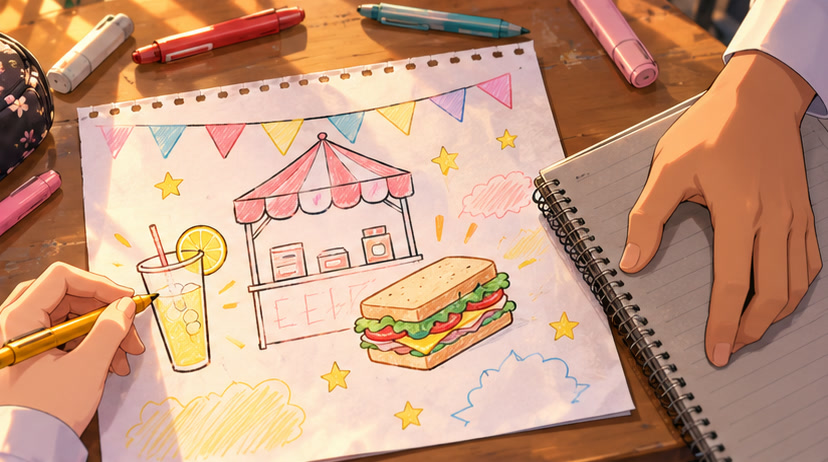
EP1-sepakat-04-02 · Pencerita · narasi tenang
Cabang: Pelan sandwic.
Mira membulatkan lukisan sandwich. Kali ini, mereka merancang menu yang sama.
Visual: Close-up lakaran booth: Mira membulatkan sandwich dengan pen merah.
Gerakan: bulatan pen merah dilukis beransur di sekeliling sandwich.
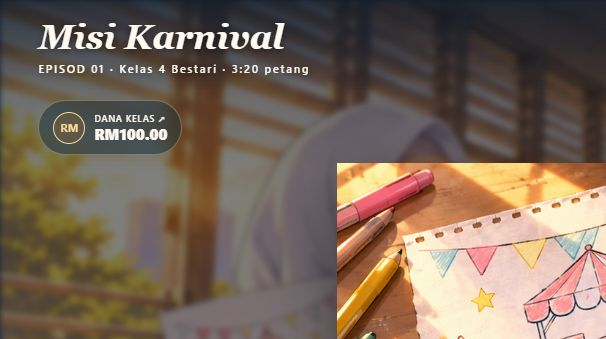
EP1-sepakat-04-03 · Pencerita · narasi tenang
Cabang: Pelan campur.
Mira menolak lakaran ke tengah. Tiga orang, dua menu—sekarang mereka perlukan cara bekerja.
Visual: Tiga tangan menolak lakaran booth ke tengah meja.
Gerakan: gambar masuk dan kamera mendekat perlahan.
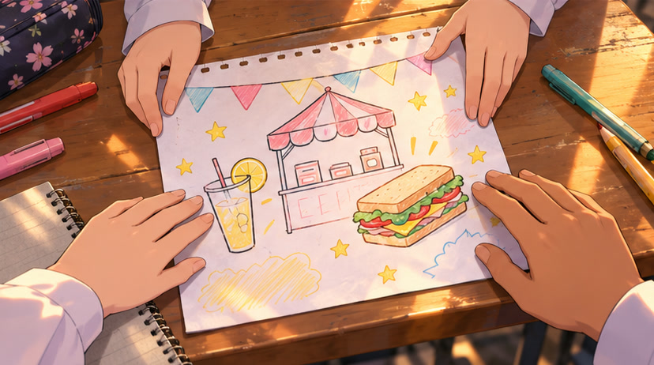
Sambungan: tenaga.
tenaga — Kelas 4 Bestari · 3:30 petang
EP1-tenaga-01-01 · Hakim · fokus
Tapak booth dah ada. Jug dan papan pemotong sekolah boleh pinjam. Tapi esok kita cuma ada satu sesi untuk prepare.
EP1-tenaga-02-01 · Mira · fokus
Kalau sewa set peralatan RM25, kerja lebih laju. Kalau upah kawan bantu RM15, ada orang boleh urus bahan dan bekas.
EP1-tenaga-03-01 · Hakim · fokus
Dengan alat, kita mampu buat 60 unit kerja. Dengan pembantu, 40 unit. Aku tulis dua pilihan dekat sini.
EP1-tenaga-04-01 · Mira · fokus
Alat beri kapasiti lebih besar, tapi baki duit kurang. Pembantu lebih murah. Mana satu kita tempah?
Pilihan pemain (teks skrin)
- Sewa peralatan RM25 · 60 unit kerja. → siap-alat
- Upah pembantu RM15 · 40 unit kerja. → siap-buruh
siap-alat — Bilik persediaan · Esok, 7:30 pagi
Peralihan di skrin (VO pilihan): Esok pagi. Pelan semalam mula jadi kerja sebenar.
EP1-siap-alat-01-01 · Pencerita · narasi tenang
Set peralatan yang kamu tempah sudah sampai. Mira susun bahan untuk contoh sandwich; Hakim semak senarai.
Visual: Set peralatan tiba; Mira menyusun bahan sementara Hakim menyemak senarai.
Gerakan: gambar masuk dan kamera mendekat perlahan.
EP1-siap-alat-02-01 · Mira · fokus
Okay, semua ready. Aku buat satu contoh dulu supaya kita tahu langkahnya.
EP1-siap-alat-03-01 · Hakim · fokus
Sewa RM25 dah bayar. Baki RM75.00. Dengan set ni, sesi kita cukup untuk 60 unit kerja.
Sambungan: kuantiti.
siap-buruh — Bilik persediaan · Esok, 7:30 pagi
Peralihan di skrin (VO pilihan): Esok pagi. Pasukan berkumpul untuk mula menyediakan bahan.
EP1-siap-buruh-01-01 · Pencerita · narasi tenang
Kawan yang kamu upah mengambil tugas bahan dan bekas di meja sebelah. Mira dan Hakim menyiapkan contoh di meja utama.
Visual: Kawan mengurus bahan dan bekas di meja sebelah.
Gerakan: gambar masuk dan kamera mendekat perlahan.
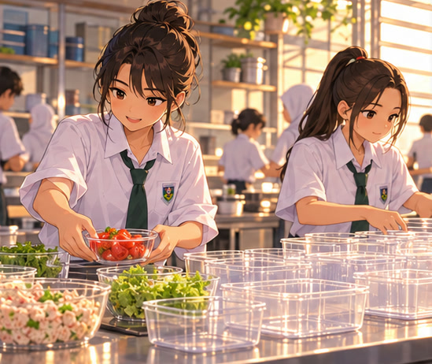
EP1-siap-buruh-02-01 · Mira · fokus
Best, ada orang bantu. Aku tunjuk contoh; lepas tu kita bahagi tugas ikut jumlah yang dipilih.
EP1-siap-buruh-03-01 · Hakim · fokus
Upah RM15 dah bayar. Baki RM85.00. Sesi kita cukup untuk 40 unit kerja.
Sambungan: kuantiti.
kuantiti — Bilik persediaan · 7:45 pagi
EP1-kuantiti-01-01 · Pencerita · narasi tenang
Mira letak salad atas roti contoh. Hakim tandakan dua lajur: air dan sandwich.
Visual: Mira meletakkan salad atas roti contoh; buku dua lajur ada di sisi.
Gerakan: gambar masuk dan kamera mendekat perlahan.
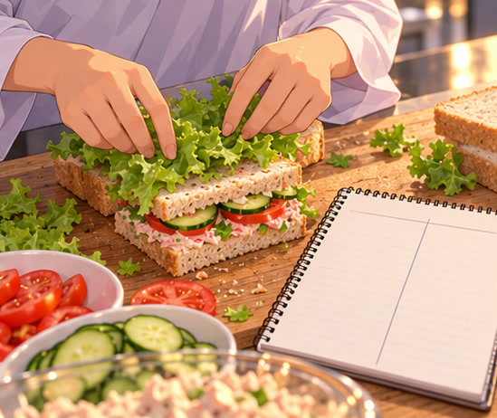
EP1-kuantiti-02-01 · Hakim · fokus
Satu air guna 1 unit kerja dan bahan RM1. Satu sandwich guna 2 unit kerja dan bahan RM2.
EP1-kuantiti-03-01 · Mira · fokus
Cabang: Kapasiti 60 unit kerja.
Jadi kapasiti 60 tu cukup untuk 60 air, atau 30 sandwich. Kalau tambah satu sandwich, kena kurangkan dua air.
EP1-kuantiti-03-02 · Mira · fokus
Cabang: Kapasiti 40 unit kerja.
Jadi kapasiti 40 tu cukup untuk 40 air, atau 20 sandwich. Kalau tambah satu sandwich, kena kurangkan dua air.
EP1-kuantiti-04-01 · Hakim · fokus
Cabang: Kapasiti 60 unit kerja.
Kalau bahagi kerja sama rata: 30 air dan 15 sandwich. Semua pilihan ni guna bahan bernilai RM60.00.
EP1-kuantiti-04-02 · Hakim · fokus
Cabang: Kapasiti 40 unit kerja.
Kalau bahagi kerja sama rata: 20 air dan 10 sandwich. Semua pilihan ni guna bahan bernilai RM40.00.
EP1-kuantiti-05-01 · Mira · fokus
Cabang: Pelan air.
Semalam kita pilih fokus air. Bahan jualan belum dibeli—nak teruskan pelan tu atau ubah jumlah sekarang?
EP1-kuantiti-05-02 · Mira · fokus
Cabang: Pelan sandwic.
Semalam kita pilih fokus sandwich. Bahan jualan belum dibeli—nak teruskan pelan tu atau ubah jumlah sekarang?
EP1-kuantiti-05-03 · Mira · fokus
Cabang: Pelan campur.
Semalam kita pilih sedikit air dan sandwich. Bahan jualan belum dibeli—nak teruskan pelan tu atau ubah jumlah sekarang?
Pilihan pemain (teks skrin)
- Teruskan pelan: 40 air, 0 sandwich. → stok
- Bahagi kerja: 20 air, 10 sandwich. → stok
- Fokus sandwich: 0 air, 20 sandwich. → stok
- Teruskan pelan: 0 air, 20 sandwich. → stok
- Fokus air: 40 air, 0 sandwich. → stok
- Teruskan pelan: 20 air, 10 sandwich. → stok
- Teruskan pelan: 60 air, 0 sandwich. → stok
- Bahagi kerja: 30 air, 15 sandwich. → stok
- Fokus sandwich: 0 air, 30 sandwich. → stok
- Teruskan pelan: 0 air, 30 sandwich. → stok
- Fokus air: 60 air, 0 sandwich. → stok
- Teruskan pelan: 30 air, 15 sandwich. → stok
stok — Bilik persediaan · 8:30 pagi
EP1-stok-01-01 · Mira · fokus
Cabang: Pelan dikekalkan.
Okay, ikut pelan. Aku susun kerja; kau tolong beli bahan ikut senarai ni.
EP1-stok-01-02 · Mira · fokus
Cabang: Pelan diubah.
Okay, kita ubah sebelum beli bahan. Aku tukar susunan kerja dulu supaya semua orang ikut jumlah baru.
EP1-stok-02-01 · Pencerita · narasi tenang
Selepas bahan dibeli, mereka membahagi tugas. Sedikit demi sedikit, bekas yang kosong mula terisi.
Visual: Bekas kosong diisi dengan produk satu demi satu.
Gerakan: gambar masuk dan kamera mendekat perlahan.
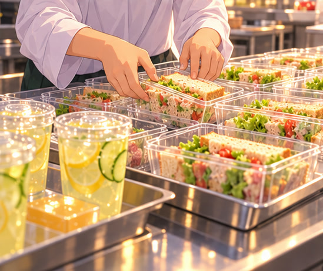
EP1-stok-03-01 · Hakim · ceria
Cabang: Keluaran 60 air / 0 sandwich.
Siap: 60 air dan 0 sandwich. Bahan RM60.00; baki RM15.00. Semua dah bertutup.
EP1-stok-03-02 · Hakim · ceria
Cabang: Keluaran 30 air / 15 sandwich.
Siap: 30 air dan 15 sandwich. Bahan RM60.00; baki RM15.00. Semua dah bertutup.
EP1-stok-03-03 · Hakim · ceria
Cabang: Keluaran 0 air / 30 sandwich.
Siap: 0 air dan 30 sandwich. Bahan RM60.00; baki RM15.00. Semua dah bertutup.
EP1-stok-03-04 · Hakim · ceria
Cabang: Keluaran 40 air / 0 sandwich.
Siap: 40 air dan 0 sandwich. Bahan RM40.00; baki RM45.00. Semua dah bertutup.
EP1-stok-03-05 · Hakim · ceria
Cabang: Keluaran 20 air / 10 sandwich.
Siap: 20 air dan 10 sandwich. Bahan RM40.00; baki RM45.00. Semua dah bertutup.
EP1-stok-03-06 · Hakim · ceria
Cabang: Keluaran 0 air / 20 sandwich.
Siap: 0 air dan 20 sandwich. Bahan RM40.00; baki RM45.00. Semua dah bertutup.
EP1-stok-04-01 · Pencerita · narasi tenang
Mereka angkat bekas ke booth. Baru saja menu hendak digantung, titisan hujan jatuh atas kanopi.
Visual: Mira dan Hakim membawa stok ke booth ketika titisan hujan mula jatuh.
Gerakan: gambar masuk dan kamera mendekat perlahan.
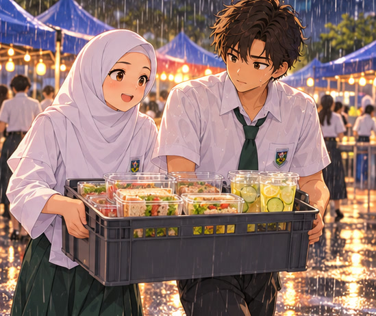
Sambungan: langit.
langit — Tapak karnival · 9:00 pagi
Peralihan di skrin (VO pilihan): Dari bilik persediaan ke tapak karnival. Hujan semakin lebat.
EP1-langit-01-01 · Pencerita · narasi tenang
Hakim rapatkan bekas makanan ke bawah bumbung. Mira memandang murid yang berlari menuju ke dewan.
Visual: Hakim merapatkan bekas di bawah kanopi; Mira melihat ke arah dewan.
Gerakan: gambar masuk dan kamera mendekat perlahan.
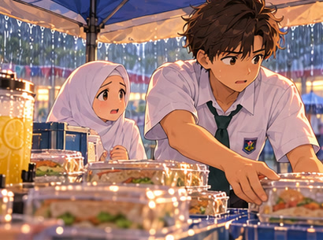
EP1-langit-02-01 · Mira · risau
Weh… laluan kita makin kosong. Belum buka jualan pun hujan dah turun.
EP1-langit-03-01 · Hakim · risau
Cabang: Baki tunai RM15.00.
Tunai tinggal RM15.00. Penganjur kata boleh pindah ke ruang berbumbung tepi dewan, tapi kena bayar RM10.
EP1-langit-03-02 · Hakim · risau
Cabang: Baki tunai RM45.00.
Tunai tinggal RM45.00. Penganjur kata boleh pindah ke ruang berbumbung tepi dewan, tapi kena bayar RM10.
EP1-langit-04-01 · Mira · risau
Ada ruang bantuan percuma juga, cuma kena tunggu giliran. Kalau kekal sini, kita jimat duit tapi pembeli kurang.
EP1-langit-05-01 · Hakim · risau
Bekas dah selamat. Sekarang kita pilih tempat—pindah terus, kekal sini, atau tunggu bantuan?
Pilihan pemain (teks skrin)
- Bayar RM10. Pindah sekarang. → dalam
- Kekal bawah kanopi. Jimat tunai. → luar
- Tunggu ruang bantuan percuma. → dibantu
dalam — Tepi dewan · 9:15 pagi
EP1-dalam-01-01 · Pencerita · narasi tenang
Kamu bayar RM10. Mereka mengangkat stok ke ruang berbumbung tepi dewan; hujan masih kedengaran di luar.
Visual: Pasukan membawa stok ke ruang berbumbung tepi dewan.
Gerakan: gambar masuk dan kamera mendekat perlahan.
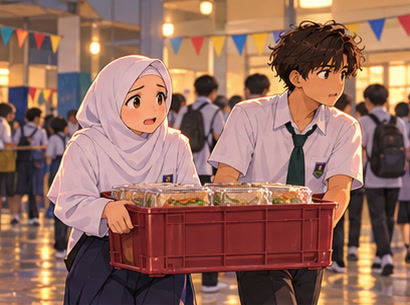
EP1-dalam-02-01 · Mira · ceria
Dekat sini orang lalu! Kau susun bekas, aku gantung menu.
EP1-dalam-03-01 · Hakim · fokus
Cabang: Baki tunai RM5.00.
Baki RM5.00. Kita dah belanja untuk dapat tempat ni. Jom sediakan jualan.
EP1-dalam-03-02 · Hakim · fokus
Cabang: Baki tunai RM35.00.
Baki RM35.00. Kita dah belanja untuk dapat tempat ni. Jom sediakan jualan.
Sambungan: pelanggan.
luar — Tapak karnival · 9:15 pagi
EP1-luar-01-01 · Pencerita · narasi tenang
Mereka kekal di bawah kanopi. Beberapa murid lalu cepat-cepat tanpa berhenti.
Visual: Murid berpayung melintasi booth luar tanpa berhenti.
Gerakan: gambar masuk dan kamera mendekat perlahan.
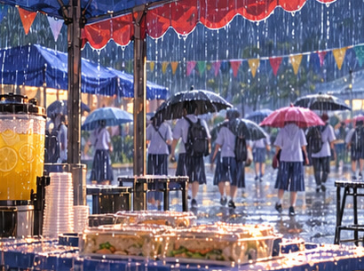
EP1-luar-02-01 · Mira · risau
Cabang: Baki tunai RM15.00.
Tunai RM15.00 tu kita simpan. Tapi… sunyi juga sini.
EP1-luar-02-02 · Mira · risau
Cabang: Baki tunai RM45.00.
Tunai RM45.00 tu kita simpan. Tapi… sunyi juga sini.
EP1-luar-03-01 · Hakim · risau
Jom susun menu menghadap laluan. Kita cuba tarik orang yang masih lalu.
Sambungan: pelanggan.
dibantu — Ruang bantuan · 9:35 pagi
EP1-dibantu-01-01 · Pencerita · narasi tenang
Selepas menunggu, penganjur memanggil mereka. Pasukan kamu dapat ruang berbumbung tanpa bayaran.
Visual: Penganjur memanggil pasukan ke ruang berbumbung tanpa bayaran.
Gerakan: gambar masuk dan kamera mendekat perlahan.
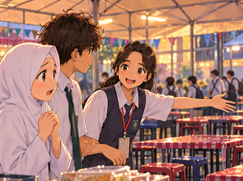
EP1-dibantu-02-01 · Mira · ceria
Akhirnya! Cepat, kita pindahkan bekas. Dah lambat sikit ni.
EP1-dibantu-03-01 · Hakim · fokus
Duit masih ada, tapi masa jualan makin pendek. Kita susun menu dulu.
Sambungan: pelanggan.
pelanggan — Booth kelas · 10:00 pagi
EP1-pelanggan-01-01 · Pencerita · narasi tenang
Cabang: Ada air untuk jualan.
Sebaik menu dipasang, seorang murid berhenti. Dia melihat harga air RM3, kemudian mengira duit di tangannya.
Visual: Seorang murid mengira duit di tangannya di depan menu booth.
Gerakan: gambar masuk dan kamera mendekat perlahan.
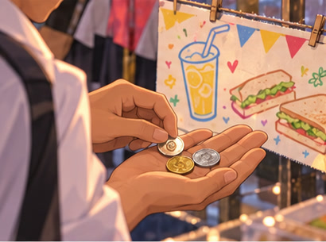
EP1-pelanggan-01-02 · Pencerita · narasi tenang
Cabang: Sandwich sahaja.
Sebaik menu dipasang, seorang murid berhenti. Dia melihat harga sandwich RM4, kemudian mengira duit di tangannya.
Visual: Seorang murid mengira duit di tangannya di depan menu booth.
Gerakan: gambar masuk dan kamera mendekat perlahan.
EP1-pelanggan-02-01 · Murid · segan, lembut
Cabang: Ada air untuk jualan.
Saya ada RM2 je. Tak apa… saya tengok dulu.
EP1-pelanggan-02-02 · Murid · segan, lembut
Cabang: Sandwich sahaja.
Saya ada RM3 je. Tak apa… saya tengok dulu.
EP1-pelanggan-03-01 · Mira · risau
Sekejap, jangan pergi dulu. Guys, boleh kita bincang harga sebelum mula jual?
EP1-pelanggan-04-01 · Hakim · fokus
Harga biasa bantu kumpul dana. Kita boleh turunkan harga, atau asingkan sedikit stok untuk bantuan—tapi duit yang masuk akan berubah.
EP1-pelanggan-05-01 · Mira · risau
Aku nak dia boleh beli juga. Tapi buku kelas pun kita kena fikir. Kita buat macam mana?
Pilihan pemain (teks skrin)
- Kekalkan harga. Kumpul dana buku. → agihan
- Harga murid: air RM2, sandwich RM3. → agihan
- Asingkan hingga 4 unit setiap produk untuk bantuan. → agihan
agihan — Booth kelas · 10:10 pagi
EP1-agihan-01-01 · Mira · fokus
Cabang: Agihan biasa.
Okay, kita kekalkan harga. Aku jelaskan elok-elok—duit ni untuk buku kelas.
EP1-agihan-01-02 · Mira · ceria
Cabang: Agihan murid · ada air.
Aku tukar menu sekarang. Adik, air RM2 lepas ni. Tunggu kejap, kita nak buka.
EP1-agihan-01-03 · Mira · ceria
Cabang: Agihan kongsi.
Aku asingkan bekas bantuan dulu. Adik boleh ambil daripada bahagian ni bila kita buka.
EP1-agihan-01-04 · Mira · ceria
Cabang: Agihan murid · sandwich sahaja.
Aku tukar menu sekarang. Adik, sandwich RM3 lepas ni. Tunggu kejap, kita nak buka.
EP1-agihan-02-01 · Hakim · fokus
Cabang: Agihan biasa; Agihan murid · ada air; Agihan murid · sandwich sahaja.
Aku tulis harga yang kita setuju. Nanti kutipan jangan campur dengan baki duit bahan.
EP1-agihan-02-02 · Hakim · fokus
Cabang: Agihan kongsi.
Aku tanda stok bantuan supaya tak tercampur dengan kiraan jualan.
EP1-agihan-03-01 · Pencerita · narasi tenang
Mira mengambil kad promosi yang disiapkan semalam. Hakim mengangkat tangan memberi isyarat supaya Mira tunggu dulu.
Visual: Hakim memberi isyarat berhenti dengan tapak tangan terbuka, tanpa menyentuh Mira.
Gerakan: gambar masuk dan kamera mendekat perlahan.
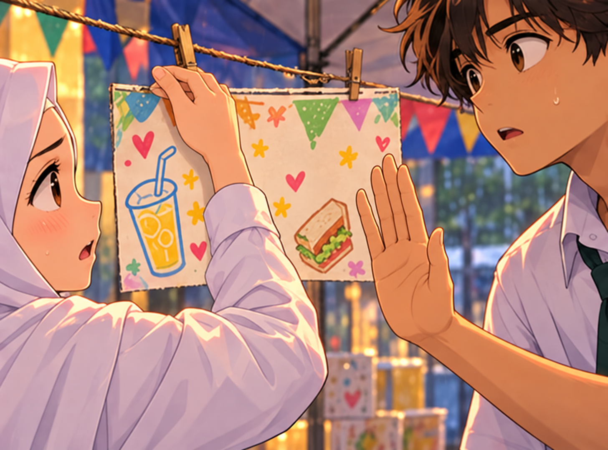
Sambungan: amanah.
amanah — Booth kelas · 10:20 pagi
EP1-amanah-01-01 · Hakim · risau
Eh, kad ni tulis setiap pembelian dapat hadiah. Hadiah kita cuma ada lima.
EP1-amanah-02-01 · Mira · risau
Alamak. Aku buat sebelum kira bajet. Kalau tukar jadi lima pembeli pertama, okay tak?
EP1-amanah-03-01 · Hakim · risau
Okay. Tapi kalau biarkan ayat lama, orang akan harapkan hadiah yang kita tak ada.
EP1-amanah-04-01 · Mira · risau
Pen dah ada sini. Kita betulkan dulu, atau tetap gantung kad lama?
Pilihan pemain (teks skrin)
- Betulkan: hadiah untuk lima pembeli pertama. → jualan
- Gantung kad lama walaupun hadiah tak cukup. → jualan
jualan — Booth kelas · Jualan bermula
EP1-jualan-01-01 · Pencerita · narasi tenang
Cabang: Mengikut versi dialog / keadaan pasukan.
Mira membetulkan kad promosi. Hakim susun stok; kamu menjaga kutipan. Akhirnya, booth mereka dibuka.
Visual: Mira membetulkan kad promosi; lima hadiah disusun di sebelahnya.
Gerakan: gambar masuk dan kamera mendekat perlahan.
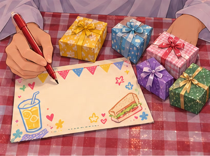
EP1-jualan-01-02 · Pencerita · narasi tenang
Cabang: Mengikut versi dialog / keadaan pasukan.
Kad lama digantung. Mira menyerahkan stok kepada pembeli pertama; kamu mula mengumpulkan bayaran.
Visual: Produk diserahkan kepada pembeli dan bayaran diterima.
Gerakan: gambar masuk dan kamera mendekat perlahan.
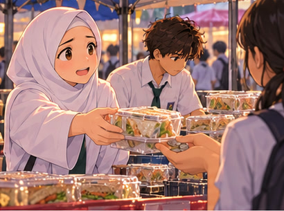
EP1-jualan-02-01 · Mira · ceria
Cabang: Mengikut versi dialog / keadaan pasukan.
Hadiah untuk lima pembeli pertama ya. Terima kasih singgah booth kita!
EP1-jualan-02-02 · Mira · risau
Cabang: Mengikut versi dialog / keadaan pasukan.
Hakim… ada orang tanya hadiah lagi. Lima hadiah tu dah habis.
EP1-jualan-03-01 · Hakim · fokus
Cabang: Promosi jujur · lokasi dewan · agihan biasa; Promosi jujur · lokasi dewan · agihan murid; Promosi jujur · lokasi dewan · agihan kongsi.
Dekat laluan ni ramai juga singgah. Kau urus bayaran, aku semak bekas yang keluar.
EP1-jualan-03-02 · Hakim · risau
Cabang: Mengikut versi dialog / keadaan pasukan.
Kita kena mengaku kad tu salah. Aku turunkan sekarang—tak boleh terus janji benda yang tak ada.
EP1-jualan-03-03 · Hakim · fokus
Cabang: Promosi jujur · lokasi luar · agihan biasa; Promosi jujur · lokasi luar · agihan murid; Promosi jujur · lokasi luar · agihan kongsi.
Ada yang berhenti, tapi ramai terus menuju ke dewan. Kita teruskan dengan pelanggan yang datang.
EP1-jualan-03-04 · Hakim · fokus
Cabang: Promosi jujur · lokasi bantuan · agihan biasa; Promosi jujur · lokasi bantuan · agihan murid; Promosi jujur · lokasi bantuan · agihan kongsi.
Orang dah mula singgah. Kita kena guna masa yang masih ada sebaik mungkin.
EP1-jualan-04-01 · Pencerita · narasi tenang
Cabang: Promosi jujur · lokasi dewan · agihan biasa; Promosi jujur · lokasi luar · agihan biasa; Promosi jujur · lokasi bantuan · agihan biasa.
Bayaran dikumpulkan, pesanan diserahkan. Hakim menandakan jualan dalam buku yang sama sejak semalam.
Visual: Produk diserahkan kepada pembeli dan bayaran diterima.
Gerakan: gambar masuk dan kamera mendekat perlahan.
EP1-jualan-04-02 · Pencerita · narasi tenang
Cabang: Mengikut versi dialog / keadaan pasukan.
Beberapa pelanggan berundur selepas mendengar penjelasan. Mereka meneruskan jualan dengan kad yang sudah diturunkan.
Visual: Pelanggan berundur ketika kad promosi diturunkan.
Gerakan: gambar masuk dan kamera mendekat perlahan.
EP1-jualan-04-03 · Pencerita · narasi tenang
Cabang: Promosi jujur · lokasi dewan · agihan murid; Promosi jujur · lokasi luar · agihan murid; Promosi jujur · lokasi bantuan · agihan murid.
Harga baharu membuat lebih ramai murid berhenti. Mira melayan pesanan sementara Hakim menanda setiap unit yang terjual.
Visual: Mira melayan barisan murid; Hakim menandakan jualan dalam buku.
Gerakan: gambar masuk dan kamera mendekat perlahan.
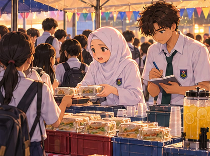
EP1-jualan-04-04 · Pencerita · narasi tenang
Cabang: Promosi jujur · lokasi dewan · agihan kongsi; Promosi jujur · lokasi luar · agihan kongsi; Promosi jujur · lokasi bantuan · agihan kongsi.
Sebahagian stok diagihkan sebagai bantuan. Stok jualan dan bantuan dicatat berasingan, satu demi satu.
Visual: Bekas bantuan diserahkan daripada bakul yang berasingan dengan stok jualan.
Gerakan: gambar masuk dan kamera mendekat perlahan.
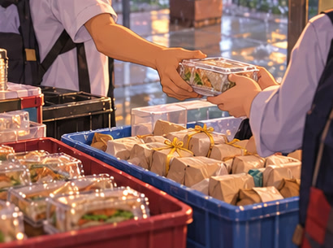
EP1-jualan-05-01 · Pencerita · narasi tenang
Menjelang petang, hujan reda dan pengunjung mula pulang. Mira mengambil kotak kosong. Masa untuk kira baki dan kemas booth.
Visual: Hujan reda, pengunjung pulang dan Mira mengambil kotak kosong.
Gerakan: gambar masuk dan kamera mendekat perlahan.
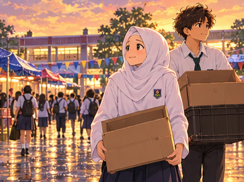
Sambungan: penutup.
penutup — Tapak karnival · 4:00 petang
Peralihan di skrin (VO pilihan): Karnival berakhir. Mereka mengemas sambil mengira kutipan.
EP1-penutup-01-01 · Pencerita · narasi tenang
Mira menyusun bekas berbaki dalam kotak. Hakim duduk di sebelahnya, membuka semula buku kira-kira.
Visual: Mira menyusun bekas berbaki ke dalam kotak; Hakim membuka buku.
Gerakan: gambar masuk dan kamera mendekat perlahan.
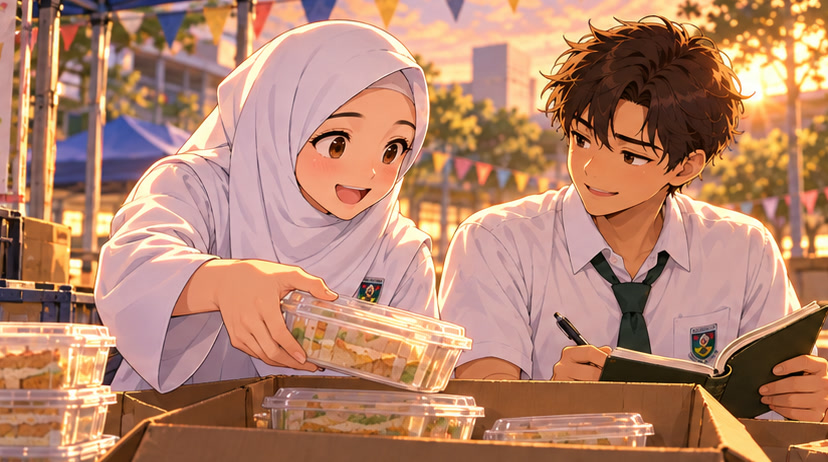
EP1-penutup-02-01 · Hakim · ceria
Hari ni terjual {AIR_TERJUAL} air dan {SANDWICH_TERJUAL} sandwich. Kutipan {JUMLAH_HASIL}.
EP1-penutup-03-01 · Mira · ceria
Belanja semua sekali {JUMLAH_BELANJA}. Jadi duit kelas yang kita bawa balik… {DANA_AKHIR}.
EP1-penutup-04-01 · Kamu · tenang, membantu
Cabang: Sasaran tunai dicapai.
Cukup untuk target buku! Semalam kita cuma ada lakaran. Hari ni kita dah buat jadi.
EP1-penutup-04-02 · Kamu · tenang, membantu
Cabang: Sasaran tunai belum dicapai.
Belum cukup RM120. Kita bawa balik dulu apa yang ada, kemudian fikir cara cukupkan baki.
EP1-penutup-05-01 · Mira · ceria
Cabang: Promosi jujur.
Penat, tapi lega. Kita tepati apa yang kita janji dekat pelanggan.
EP1-penutup-05-02 · Mira · risau
Cabang: Promosi palsu.
Pasal kad tadi… aku kena minta maaf. Lepas ni aku semak dulu sebelum janji apa-apa.
EP1-penutup-06-01 · Hakim · ceria
Cabang: Promosi jujur.
Aku simpan kiraan ni. Banyak yang kita boleh buat lebih baik untuk karnival seterusnya.
EP1-penutup-06-02 · Hakim · risau
Cabang: Promosi palsu.
Kita baiki sama-sama. Aku simpan kiraan ni supaya kita ingat apa yang jadi.
EP1-penutup-07-01 · Pencerita · narasi tenang
Mira melipat lakaran booth dan menyelitkannya ke dalam buku Hakim. Mereka mengangkat kotak terakhir bersama-sama.
Visual: Mira melipat lakaran booth dan menyelitkannya ke dalam buku Hakim.
Gerakan: gambar masuk dan kamera mendekat perlahan.
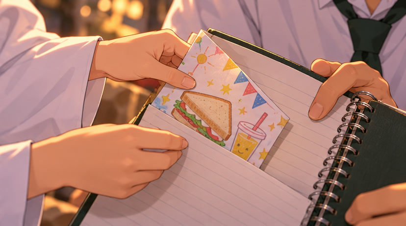
Selepas 3.6 saat: Mira dan Hakim mengangkat kotak terakhir bersama-sama.
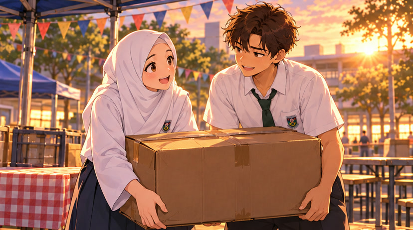
Sambungan: tamat.
Dialog penerokaan scene
Dialog ini dimainkan apabila pelajar menekan objek semasa Jelajah scene.
EP1-jelajah-kelas-lakaran · Mira · fokus
Objek: Lakaran booth.
Ni idea booth kita! Air dan sandwich nampak best, tapi kita kena pilih ikut duit dan masa yang ada.
EP1-jelajah-kelas-buku · Hakim · fokus
Objek: Buku kira-kira.
Duit kelas RM100. Wishlist RM150. Beza RM50 tu sebab kita kena kecilkan pelan, bukan terus janji buat semua.
EP1-jelajah-persediaan-salad · Mira · ceria
Objek: Letak salad.
Okay, salad atas roti dulu. Aku susun contoh sandwich ni; lepas pilih kuantiti, baru kita sediakan stok jualan.
EP1-jelajah-persediaan-jug · Hakim · fokus
Objek: Sediakan air.
Jug dan bahan air dah ready. Setiap cawan guna bahan serta masa; banyak mana kita buat kena ikut kapasiti pasukan.
EP1-jelajah-persediaan-kira · Hakim · fokus
Objek: Semak kapasiti.
Aku semak kiraan sambil Mira susun bahan. Satu air guna 1 unit kerja, satu sandwich guna 2. Kita tak boleh melebihi had sesi ni.
EP1-jelajah-hujan-bekas · Hakim · risau
Objek: Jaga bekas.
Aku pegang bekas ni supaya makanan kekal bertutup. Stok dah siap; sekarang kita kena pilih lokasi yang sesuai untuk jual.
EP1-jelajah-hujan-hujan · Mira · risau
Objek: Tengok laluan.
Laluan luar dah sunyi. Jimat bayaran tapak ada manfaat, tapi kita mungkin lepaskan peluang jumpa lebih ramai pembeli.
EP1-jelajah-senja-kotak · Mira · ceria
Objek: Kemas booth.
Kita susun bekas yang masih bertutup dalam kotak. Dah habis karnival, kita tetap kena kira baki dan kemas sama-sama.
EP1-jelajah-senja-stok · Hakim · fokus
Objek: Semak baki stok.
Baki stok: {AIR_BAKI} air dan {SANDWICH_BAKI} sandwich. Jualan dan bantuan dikira berasingan.
Token tambahan: {AIR_BAKI} dan {SANDWICH_BAKI} ialah jumlah stok tidak terjual selepas jualan dan bantuan. Contoh laluan dalam jadual di atas: 2 air dan 0 sandwich.
Ending (VO pilihan)
target — Janji kelas, tertunai.
Dana buku mencapai sasaran. Pasukan kamu mengurus sumber, membuat pilihan dan menerima pengorbanannya. Strategi lain boleh membawa perjalanan yang berbeza.
Visual: pasukan mengangkat kotak terakhir bersama-sama.
amanah — Janji yang perlu diperbaiki.
Kamu sudah nampak kesan promosi yang tidak benar: pelanggan berundur dan kepercayaan hilang. Dana sahaja tidak menceritakan semuanya. Ada peluang memilih dengan lebih jujur apabila bermain semula.
Visual: pasukan mengangkat kotak terakhir bersama-sama.
kongsi — Ada yang kita kongsi.
Sasaran dana belum dicapai, tetapi pilihan agihan membuka ruang untuk lebih ramai murid. Bincangkan apa yang diperoleh dan apa yang dilepaskan—kemudian cuba laluan lain.
Visual: pasukan mengangkat kotak terakhir bersama-sama.
belajar — Belum cukup. Belum habis.
Dana belum mencapai sasaran. Pasukan kamu kini tahu bagaimana kapasiti, lokasi dan kuasa beli membentuk keputusan. Peluang belajar itu boleh dibawa ke percubaan seterusnya.
Visual: pasukan mengangkat kotak terakhir bersama-sama.
Semakan liputan
Semua 324 kombinasi pilihan telah dilalui ketika skrip dieksport. Semua varian dialog dicatat; angka penutup ditandakan sebagai token. Skrip mengandungi 125 cue rakaman.